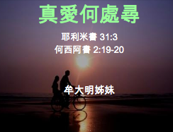

| 牟大明 | |
| 牟大明 2010年由西方神學院(Western Seminary)畢業, 主修婚姻家庭心理輔導 (MFT), 並持有中國國家婚姻家庭諮詢師執照, 及加州大學商業電腦碩士學位. 目前於Concord私人診所實習. 她曾擔任Contra Costa危機中心(Crisis Center)傷痛輔導, 及角聲護家中心專業輔導員. 和先生牟孝文結婚26年, 育有三個孩子. 曾任主日學教師22年, 目前在Antioch/Brentwood帶領服事青少年團契. | |
|
|
|
|  | |||||
| 2014真愛何處尋講座 | |||||
| 2014年9月19日 | |||||
| 9/19 星期五 | 信息: 「真 愛何處尋」 | ||||